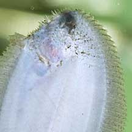
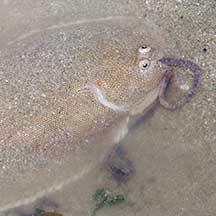
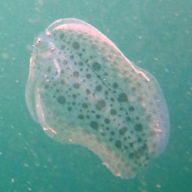
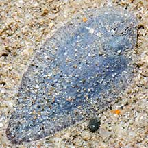
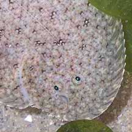
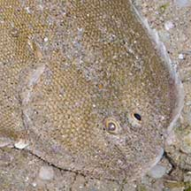
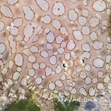

|
|
| fishes text index | photo index |
| Phylum Chordata > Subphylum Vertebrata > fishes > Order Pleuronectiformes |
| Soles Family Soleidae updated Oct 2020
Where seen? Some of these flatfishes really do look like the sole of a shoe! Others have pretty patterns. They are often seen on our Northern shores, sometimes also on our Southern shores. Usually in sandy areas near seagrass meadows. What are soles? Soles are flatfishes that belong to the Family Soleidae. According to FishBase: the family has 22 genera and 89 species. They are found mainly from Europe to Australia and Japan. The Latin 'solea' means 'sandal'. Features: 10-30cm. Eyes small and on the right side. The head is small. In some species, the tail fin separate from the dorsal and anal fins. In others, such as Commerson's sole (Synaptura commersoniana), the tail fins are joined to the dorsal and anal fins. The fins lack spines. These bottom-dwelling fishes over 'walk' over the sand by undulating their fins (here's a video). Snout sometimes hook-shaped. Scales relatively large and sometimes modified into skin flaps fringed with sensory filaments. Colours on the eyed side highly variable depending on the surroundings. May be uniformly brown to patterned with scattered dark spots or blotches. Some soles such as the Peacock sole (Pardachirus pavoninus) have toxin glands that produce a distasteful substance. The Moses sole (Pardachirus mamoratus) found in the Red Sea produces an astringent, frothy, soap-like poison, called pardaxin, that was found to repel sharks. However, the toxin proved difficult to package and store and could not be used to protect humans. Sometimes confused with other flatfishes. Here's more on how to tell apart the flatfish families commonly seen. |
 Lurking under the sand. Chek Jawa, Jan 04 |
 Underside of a sole in a tank. Sungei Buloh Wetland Reserve, Jul 04 |
 Eating a worm! |
| What do they eat? Soles hunt small animals that live on the bottom of the sea including other fishes. Some species have tentacles around the mouth on the blind side. Teeth only on the blind side of the mouth, on both jaws. |
 Pelagic juvenile sole. Sisters Island, Sep 13 Photo shared by Marcus Ng on flickr. |
 Unidentified juvenile sole. Tanah Merah, May 11 |
 Unidentified juvenile sole. Kusu Island, May 14 Photo shared by Marcus Ng on flickr. |
| Single-sided Fish: Flatfishes
undergo an amazing change as they grow up. When it first hatches,
a flatfish larva looks like the larva of other 'normal' fish. As the
larva matures, it starts to swim on one side of its body.
One eye moves to what becomes the upperside, also called the eyed
side. The mouth and one pectoral fin also becomes asymmetrically distorted.
There are also changes in the skeleton and digestive system. The change
may be completed within five days. Human uses: Some species are economically very important and are harvested for the food trade. |
| Some Soles on Singapore shores |
 |
 |
 |


 |
 |


| Family
Soleidae recorded for Singapore from Wee Y.C. and Peter K. L. Ng. 1994. A First Look at Biodiversity in Singapore. *Lim, Kelvin K. P. & Jeffrey K. Y. Low, 1998. A Guide to the Common Marine Fishes of Singapore. **from WORMS
|
Links
References
|